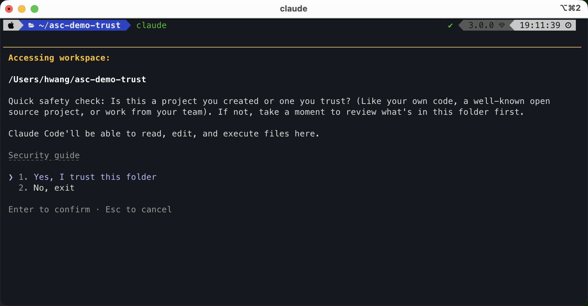

LESSON 01 · 설치와 환경 검증
내 컴퓨터에서
Claude Code를 시작합니다.
설치하고, 작업 폴더에서 직접 실행한 뒤, 준비가 됐다는 증거를 남깁니다.
오늘의 결과물
asc-lesson1-env.txt — 설치·진단·실제 모델 호출이 정상이라는 기록시작 전,
이 차이를 알고 있나요?
모르면 괜찮습니다. 이 레슨에서 가져갈 핵심이 바로 이 차이입니다.
대화창의 답이 아니라
폴더의 결과를 만듭니다.
웹 챗
대화창에서 답을 받고, 파일은 내려받아 저장합니다.
Claude Code
내가 연 폴더에서 파일을 읽고, 만들고, 확인합니다.
그래서 “글을 써줘”보다 “이 폴더의 메모를 읽고 결정·담당자·기한으로 정리해 파일로 남겨줘”처럼 끝난 상태를 말합니다.
설치는 공식 문서를
기준으로 합니다.
- 내 운영체제에 맞는 최신 설치 방법을 확인합니다.설치 명령은 바뀔 수 있으니, 오래된 화면을 그대로 따르지 않습니다.
- 설치가 끝나면 터미널을 새로 엽니다.새 창이 설치된 명령 위치를 다시 읽습니다.
sudo는 붙이지 않습니다.내 계정에서 명령을 못 찾는 권한 문제를 피합니다.
claude --version오류 없이 Claude Code 버전이 나오면 설치는 끝입니다.
내가 만든 빈 폴더에서
처음 시작합니다.
처음 열면 폴더를 믿을지 묻습니다. 직접 만든 빈 연습 폴더라면 진행해도 됩니다.

안전 기준인터넷에서 내려받거나 남에게 받은 프로젝트는 바로 신뢰하지 않습니다. 설정과 명령을 먼저 확인합니다.
작은 파일 하나를
실제로 만듭니다.
이 폴더에 hello.md 파일을 만들고,
첫 줄에는 "ASC 에이전트 트랙을 시작합니다"라고 적어줘.
파일을 만든 뒤 내용도 확인해줘.대화창의 답만 보지 말고, 작업 폴더에 hello.md가 생겼는지 확인합니다. 이게 이후 모든 실습의 기본 흐름입니다.
진단하고,
증거 파일을 남깁니다.
claude doctor
claude auth status설치와 진단
claude --version과 claude doctor로 확인합니다.
실제 호출
모델이 응답하는지 한 번 직접 확인합니다.
결과는 asc-lesson1-env.txt에 모읍니다. API 키·토큰·이메일·개인 경로는 넣지 않습니다.